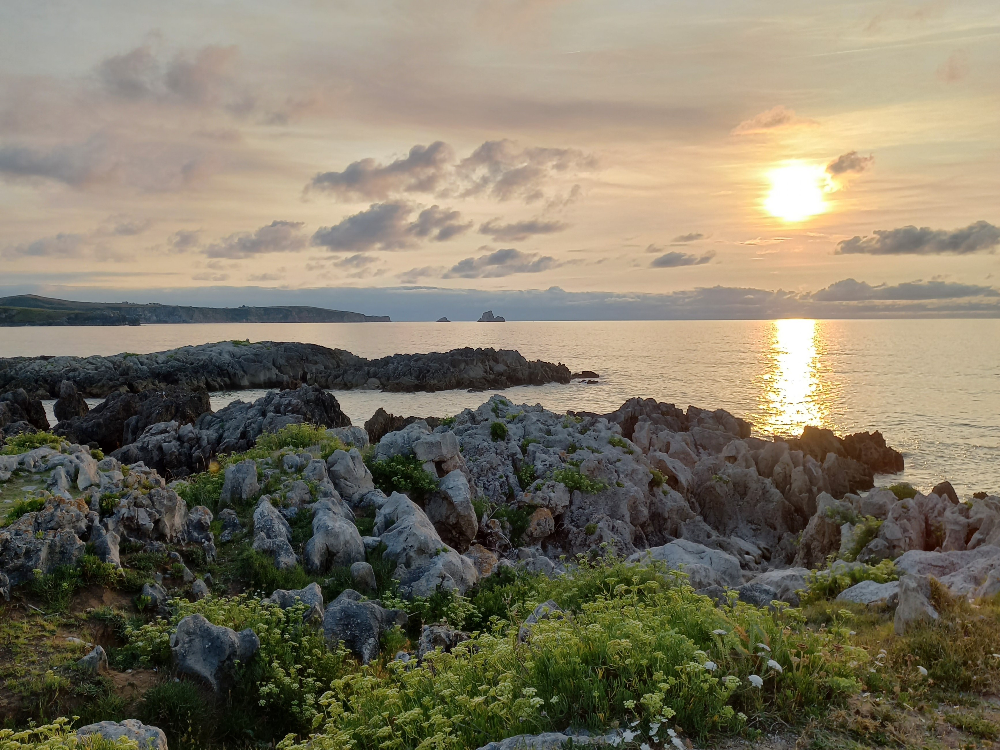
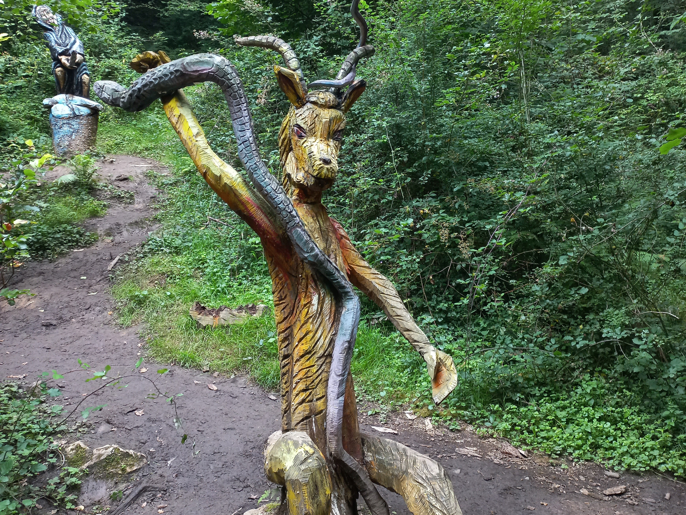
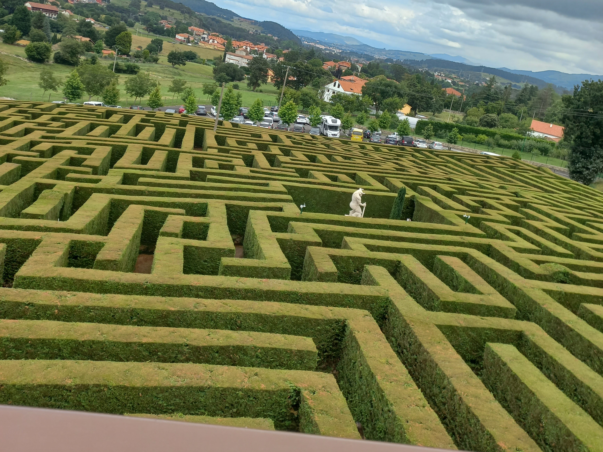
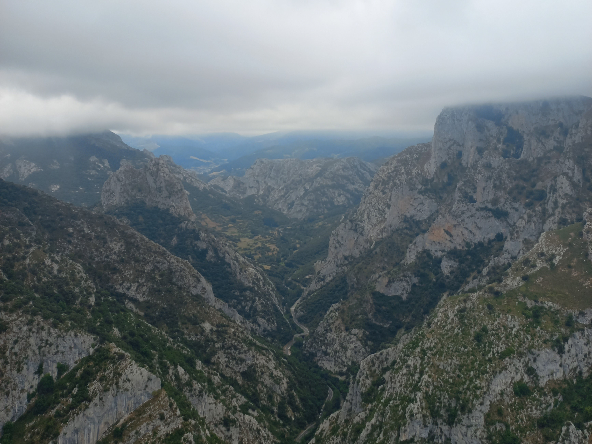
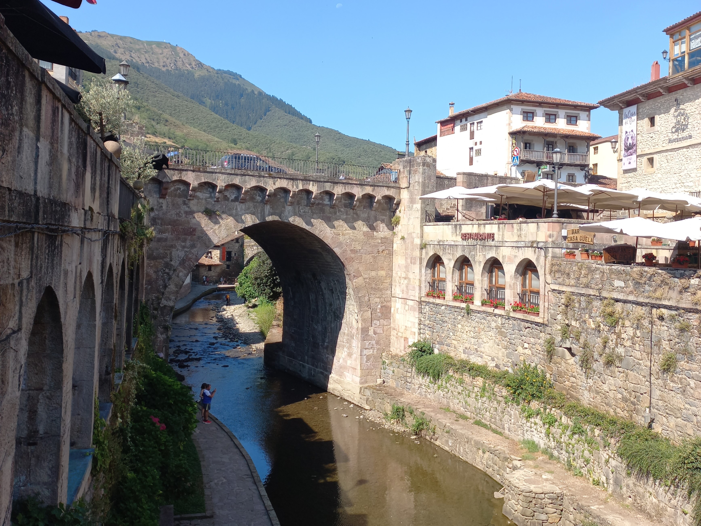
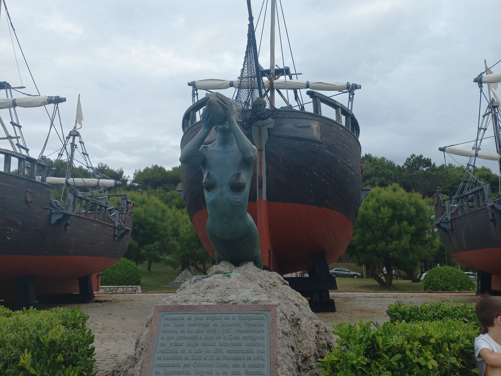

Bienvenidos a la Cantabria infinita. Cantabria es una comunidad autónoma española. La ciudad de Santander es su capital y municipio más poblado. La comunidad está compuesta por una sola provincia, también llamada Cantabria, y por 102 municipios.

Costa quebrada

Ruta mitológica Monte Teja

Laberinto de Villapresente

Mirador de Santa Catalina

Pueblo de Potes
